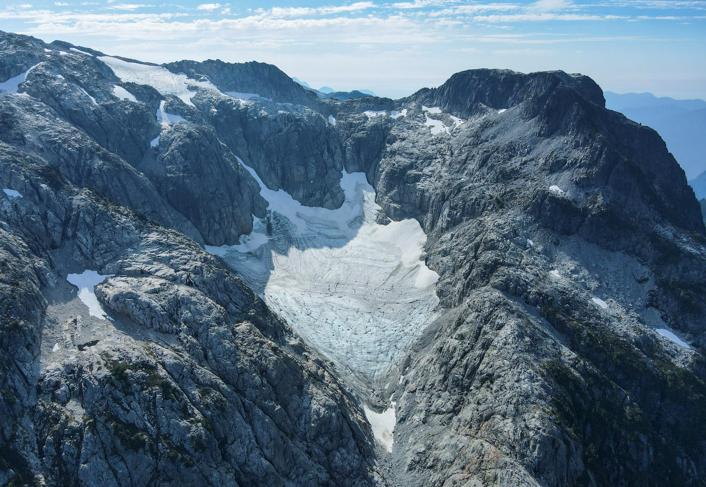

Coquitlam Glacier#

The last remaining glacier in Metro Vancouver’s water supply areas sits on a high north-facing slope on the east side of the Coquitlam Watershed. This glacier formed during the Little Ice Age, a period of regional cooling in Europe and North America that began in the 1300’s and lasted until about 1850. Capilano and Seymour Watersheds may have each had one or two remaining glaciers at the beginning of the 20th century, but these likely disappeared almost 100 years ago.
Fig. 25 Air photo of the Coquitlam glacier taken in 1979#
Metro Vancouver staff have been monitoring this glacier for the past 17 years. During this time the glacier has shrunk considerably, and the rate of change has increased dramatically in the last 5 years. There are air photos of the glacier from as early as 1979. Aerial Light Detection and Ranging (LiDAR) surveys were also completed in 2015, 2018, and 2022. These LiDAR surveys show us the change in elevation between each flight.
Between 2015 and 2018, the glacier was melting (decreasing in elevation) at a rate of 0.5 m per year. Between 2018 and 2022, the rate increased to an average of 2.25 m per year. The Coquitlam Glacier has lost an average of 10.5 m of ice in the past seven years alone. The glacier extent has also decreased by almost 20% during this time. This small glacier is disappearing rapidly! It will almost certainly be gone within the next 20-25 years, but it could go much sooner.

Fig. 26 Map of the Coquitlam glacier showing the change in elevation and extent#
This summer has been another difficult year for glaciers. The seasonal snowpack melted very quickly this spring, exposing the glacier ice much earlier than usual. Persistent hot and dry conditions will cause the ice to melt much more this summer. It also looks likely that we’ll see a fairly long summer this year. Ash from wildfires has also been deposited on the ice surface over the past several years. This has darkened the ice surface, causing it to absorb more heat. To add to this, the arrival of El Nino may also mean we have less seasonal snow cover on the wasting glacier this coming winter. This poor glacier can’t catch a break!
This glacier is not a significant source of drinking water for the region, but it’s disappearance is symbolic of the impacts of climate change on our region and around the world. Our climate is changing quickly and it is having far-reaching impacts. We may not be able to rely on seasonal snow in the near future, and dry summers may extend longer into the fall.